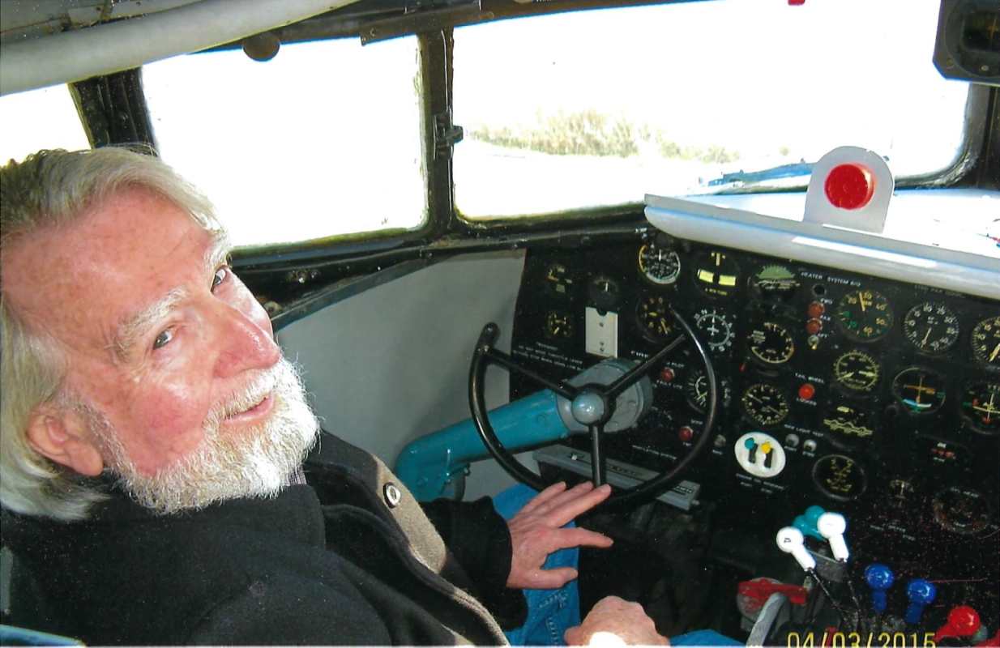

The roots of Lothian Aviation Incorporated are deep and strong.
President, Captain Bruce Lothian was born into an aviation family. His father, Captain George Bayliss Lothian (inductee of Canada's Aviation Hall of Fame) was Trans Canada Airlines/Air Canada's third pilot hired in September of 1937. His mother, Rose Crispin Lothian was the third stewardess (flight attendant) hired by TCA/AC in 1938. In that capacity, they crewed the inaugural airline service between Vancouver and Seattle in April of 1939. During World War 2, George Bayliss Lothian became the first man to cross the Atlantic Ocean 100 times in an aircraft and over the years he held the trans Atlantic speed record several times. In his capacity as Chief Pilot, Superintendent of Flying and Director of Standards and Training, George Bayliss Lothian administered pilot training and delivered the first aircraft of many fleets to Air Canada, from the Lockheed Super Constellation and including the Douglas DC-9. Upon retiring from Air Canada, George Bayliss Lothian took a major role as a consultant to the Government of Nepal to assist Royal Nepalese Airlines in developing their route structure, training procedures and operational safety. George Lothian, with his wife Rose, remained in Nepal for five years and was awarded honours there by Royal Nepalese Airlines and the King of Nepal.
Captain Bruce Lothian, President of Lothian Aviation Incorporated was destined for a career in aviation. At eight years old, he built a simulator and spent many hours fantasizing about being an airline pilot. Many years later, during his employment as a junior simulator technician, he was able to realize his dream when he qualified for his Private Pilot License. After qualifying for his Commercial Pilot License, he was able to acquire his first "large" aircraft endorsement when he completed training on the Douglas DC-3 in 1973.
In 1974 his application to Nordair Airlines was accepted and he was assigned to fly as a First Officer on the DeHavilland DHC-6 (Twin Otter) operating in Canada's high Arctic. Working his way up from the Twin Otter, Bruce flew the Fairchild Hiller - FH-227, Lockheed L-188, Boeing B-737 and Douglas DC-8, flying to many countries including the United Kingdom, Europe, North Africa, the United States, Nassau, the Caribbean and Mexico. His upgrade to Captain came in 1981 on the Fairchild Hiller - FH-227, again in the high Arctic. In 1982 Bruce joined the ranks of the training department when he was appointed to the position of Company Check Pilot on the Fairchild Hiller - FH-227. In that position, he was responsible for all phases of pilot training, evaluation, route familiarization, updating and amending procedures, policies and ground school syllabus criteria for Nordair's Arctic operations pertaining to the Fairchild Hiller - FH-227 aircraft. He resigned this appointment in 1985 in order to upgrade to Captain on the Boeing B-737.
Following the merge of Nordair into Canadian Airlines International Limited, Bruce completed his training as Captain on the Airbus A-319, A-320 and A-321. A final merge occurred in 2001 when Air Canada took over all of Canadian Airlines' operations.
After 32 years, Bruce retired from airline flying. But, like his father, he wasn't ready to close the hangar doors just yet. He joined an executive charter group and flew a corporate jet (Astra SPX, G-100) while in his leisure time he flew several different aircraft types; from the most basic and vintage (Citabria) to the high performane and more sophisticated aircraft (Aero Vodochody L-39).
After inheriting a great respect for excellence in aviation and acquiring considerable experience, Captain Lothian chose to "pay it forward" and share his love of the skies.
Thus began Lothian Aviation Incorporated
